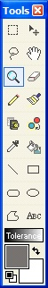
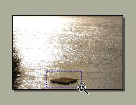

|
 The
Zoom Tool (Tools -->Zoom) allows for arbitrary zoom, general zooming in
towards a target, or for panning. Left click and drag to zoom in to a
particular area, or left click without drag to zoom in on a partiular region.
Right clicking will always zoom out. To pan using the zoom tool, use your
middle mouse button and move in the direction you wish to pan.
| Zooming in on a rectangle |
|
 |
| After zoom
|
|
|